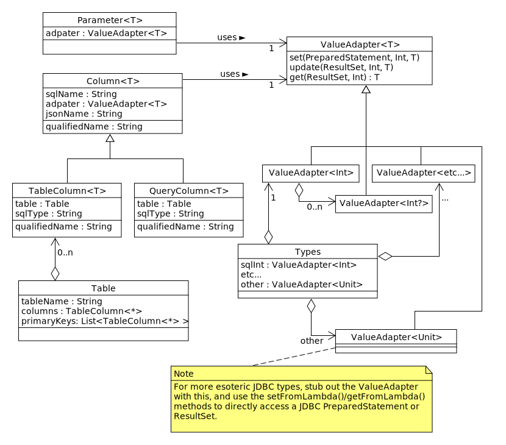

The biggest challenge in describing SQL types is managing the
translation between them Kotlin's types. The classes
above are used to describe SQL structures, and conveniently manage
that translation. Consider, for example, the SQL behind the
SELECT statement in the introduction:
SELECT People.id, People.name, People.worried FROM People WHERE People.name <> ?
Here we have three columns, represented in Kotlin as an Int,
a String and a Boolean. Further, we have
a parameter to the statement, a String.
Each column of the table is represented by a TableColumn
with an appropriate ValueAdapter. The parameter is
represented by a Parameter object, which can be used to
index into the statement to set the parameter value. The
Parameter also has a ValueAdapter
The TableColumn instances are collected together in a
Table. This provides some other features, like a
list of all the table's columns, and a feature to automatically
generate the CREATE TABLE statement.
There are no restrictions on where QueryColumn and
Parameter instance need to be stored. After all,
a SQL expression like "SELECT COUNT(*)" or "?" isn't really tied
to anything. However, it might be convenient to collect some
of these objects in singletons. This is done in the demo code,
in BiggerDemo.kt.